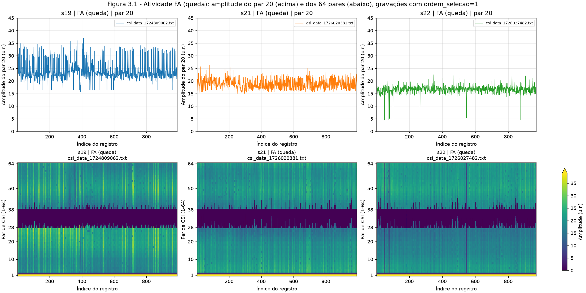
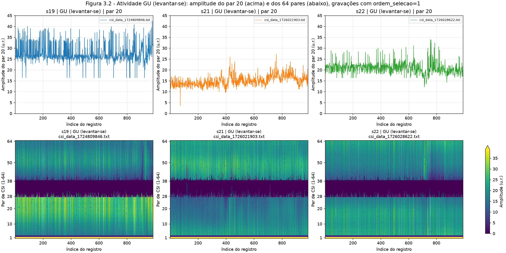
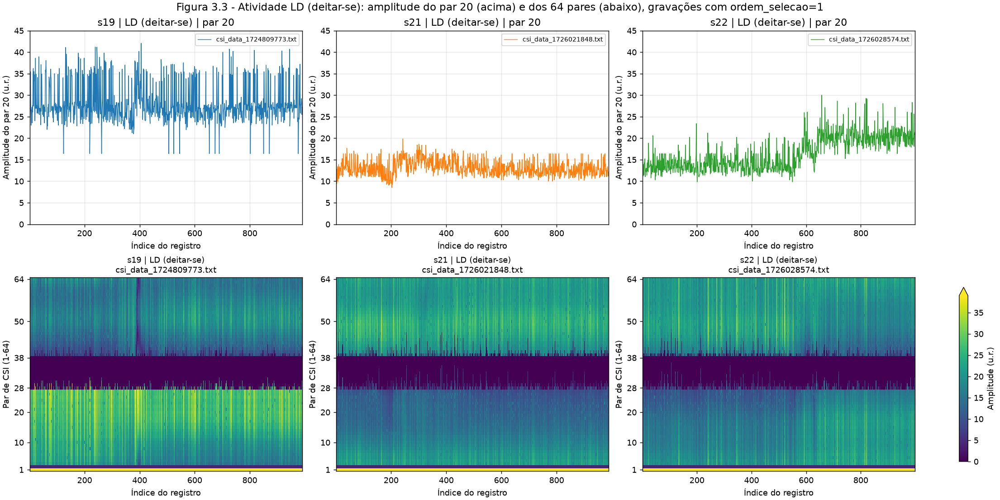
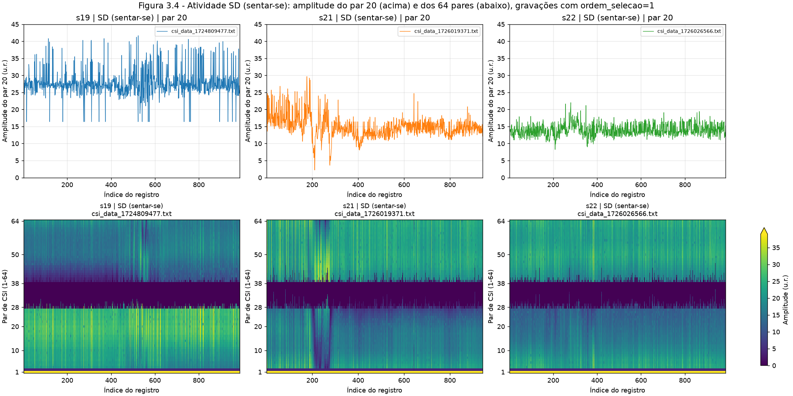
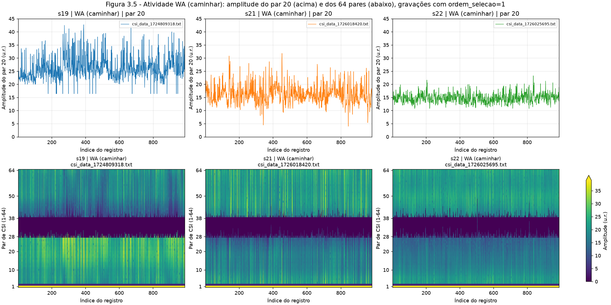

Trabalho final — Parte 1: seções 1, 2 e 3
Tópicos em Redes Móveis 2026
Equipe 14: Stephany Castro da Silva; Lahis Gomes de Almeida
Participantes da base atribuídos: s19, s21 e s22
Objetivo
Organizar e verificar as gravações de CSI de cinco atividades humanas: FA (queda), GU (levantar-se), LD (deitar-se), SD (sentar-se) e WA (caminhar). Em seguida, selecionar as 30 gravações da equipe e calcular e visualizar as amplitudes de CSI. A base vem do repositório Embedded_WiFi_Sensing e do artigo Tools and Methods for Achieving Wi-Fi Sensing in Embedded Devices (Sensors, 2025).
Todos os resultados foram gerados pelos scripts da equipe:
secao1_inventario.py, secao2_selecao.py e secao3_amplitudes.py, que podem ser executados juntos com executar_secoes_1a3.py;config.py (configuração) e comum.py (funções compartilhadas).
As instruções de execução estão em LEIA-ME.txt. Os arquivos gerados ficam em resultados/.
1. Organizar e verificar as gravações de atividades
1.1 Organização da base
A pasta Datasets/Activity contém cinco subpastas, uma por atividade. Cada atividade tem 22 subpastas de participantes (s1 a s24, sem s18 e s20), e cada subpasta guarda os arquivos csi_data_<timestamp>.txt. Cada arquivo é uma gravação. Cada linha é um registro de CSI, ou seja, um pacote Wi-Fi recebido, com 129 valores: 1 valor temporal e 64 pares (imaginária, real).
1.2 Inventário das gravações (resultados/inventario_gravacoes.csv)
O código percorre as cinco atividades e as subpastas de participantes. Ele grava uma linha por TXT com as colunas atividade, participante, caminho_txt, total_registros, registros_formato_valido e problemas_leitura. Exemplo das primeiras linhas:
| atividade |
participante |
caminho_txt |
total_registros |
registros_formato_valido |
problemas_leitura |
| FA |
s1 |
Datasets/Activity/FA/s1/csi_data_1720464506.txt |
994 |
994 |
nenhum |
| FA |
s1 |
Datasets/Activity/FA/s1/csi_data_1720464592.txt |
991 |
991 |
nenhum |
Resultado da verificação:
- TXT inventariados: 1.647, ou seja, 1.647 linhas de dados no CSV, sem contar o cabeçalho.
- Registros: 1.623.376 linhas não vazias. Todas têm 129 valores numéricos finitos.
- Problemas: nenhum arquivo vazio, ilegível ou com linha fora do formato.
problemas_leitura = nenhum em todos.
- Registros por gravação: entre 866 e 1.001. Essa variação é esperada e não é um erro.
- Conferência: a linha de exemplo do enunciado,
FA/s1/csi_data_1720464506.txt, tem 994 registros válidos de 994.
1.3 Contagem de gravações por participante e atividade (resultados/contagem_gravacoes.csv)
Cada célula informa quantos arquivos TXT existem na pasta. Não informa quantos registros há dentro deles.
| Participante |
FA |
GU |
LD |
SD |
WA |
Total |
| s1 |
14 |
15 |
15 |
15 |
15 |
74 |
| s2 |
15 |
15 |
15 |
15 |
15 |
75 |
| s3 |
15 |
15 |
15 |
15 |
15 |
75 |
| s4 |
15 |
15 |
15 |
15 |
15 |
75 |
| s5 |
15 |
14 |
15 |
15 |
15 |
74 |
| s6 |
15 |
15 |
15 |
15 |
15 |
75 |
| s7 |
14 |
15 |
15 |
15 |
15 |
74 |
| s8 |
15 |
15 |
15 |
15 |
15 |
75 |
| s9 |
15 |
15 |
15 |
15 |
16 |
76 |
| s10 |
15 |
15 |
15 |
15 |
15 |
75 |
| s11 |
15 |
15 |
15 |
15 |
15 |
75 |
| s12 |
15 |
14 |
14 |
16 |
15 |
74 |
| s13 |
15 |
15 |
15 |
15 |
15 |
75 |
| s14 |
15 |
15 |
15 |
16 |
14 |
75 |
| s15 |
15 |
15 |
15 |
15 |
15 |
75 |
| s16 |
14 |
15 |
15 |
15 |
15 |
74 |
| s17 |
15 |
15 |
15 |
15 |
15 |
75 |
| s19 |
15 |
16 |
16 |
15 |
15 |
77 |
| s21 |
15 |
15 |
15 |
15 |
15 |
75 |
| s22 |
15 |
15 |
15 |
15 |
15 |
75 |
| s23 |
15 |
15 |
15 |
15 |
15 |
75 |
| s24 |
15 |
15 |
14 |
15 |
15 |
74 |
| Total |
327 |
329 |
329 |
332 |
330 |
1.647 |
Comparação com o artigo (1.647 gravações e 22 participantes):
- Gravações: o total obtido, 1.647, é igual ao do artigo.
- Participantes: existem 22 pastas de participantes em cada atividade, e as 22 têm gravações nas cinco atividades. Não há pasta vazia. O número de pastas existentes e o de participantes com gravações coincidem, e são iguais ao valor do artigo (22).
- Numeração: os identificadores vão até s24, mas s18 e s20 não existem. Por isso o maior identificador (24) é diferente do número de participantes (22). A lacuna é só de numeração e não indica gravações perdidas.
-
Distribuição: o protocolo de 15 gravações por célula daria 22 × 5 × 15 = 1.650. Treze células são diferentes de 15:
- oito têm 14 gravações: s1-FA, s5-GU, s7-FA, s12-GU, s12-LD, s14-WA, s16-FA e s24-LD;
- cinco têm 16 gravações: s9-WA, s12-SD, s14-SD, s19-GU e s19-LD.
A conta fecha: 1.650 − 8 + 5 = 1.647. A diferença está na distribuição, não no total.
Desafios da seção 1 e como foram resolvidos
- Gravação × registro. Para não confundir os dois termos, definimos que gravação é um arquivo TXT e registro é uma linha não vazia. A tabela 1.3 conta arquivos. O inventário conta linhas.
- Escopo. O repositório também tem
Breathing(experimental), arquivos NPY, modelos e CMakeLists.txt. O código percorre apenas Datasets/Activity/{FA,GU,LD,SD,WA} e aceita somente nomes no padrão csi_data_<números>.txt. Qualquer outro arquivo seria listado como ignorado. Nenhum foi encontrado.
- Ordem dos participantes. A ordem alfabética coloca s10 antes de s2. Usamos ordenação numérica (função
chave_participante).
- Formato válido. Linhas vazias não contam como registro. Uma linha válida tem exatamente 129 campos convertíveis em número finito (
float e math.isfinite). Quando há erro, o número da linha e o motivo ficam registrados em problemas_leitura.
- Falhas de leitura. A leitura usa
utf-8-sig (que remove um eventual BOM) e errors="replace", dentro de try/except. Assim, um arquivo com defeito é registrado no inventário em vez de interromper a execução.
- Diferenças em relação ao artigo. O código separa pastas existentes, participantes com gravações e participantes com as cinco atividades. Ele também lista os IDs ausentes e as células diferentes de 15 (
resultados/resumo_secao1.txt).
- Portabilidade. A raiz da base é configurável em
config.py ou pela variável de ambiente RAIZ_BASE_CSI. O caminho_txt é gravado relativo à raiz, com separador /.
2. Selecionar as 30 gravações de análise
ID da equipe: 14. Participantes da base: s19, s21 e s22.
Para cada participante e atividade, o código (secao2_selecao.py):
- pega no inventário os TXT da pasta
Datasets/Activity/<atividade>/<participante>;
- ordena os nomes em ordem crescente;
- escolhe os dois primeiros com
total_registros > 0, registros_formato_valido = total_registros e problemas_leitura = nenhum.
Resultado:
resultados/selecao_30_gravacoes.csv tem 30 linhas de dados, com as colunas participante, atividade, caminho_txt, ordem_selecao e n_registros.- As 30 gravações estão identificadas nesse CSV.
Arquivos desconsiderados, motivos e substitutos: nenhum. Os dois primeiros TXT de cada pasta eram válidos, então não houve substituição. O arquivo resultados/arquivos_desconsiderados.csv contém só o cabeçalho. Se houvesse descartes, cada linha registraria o arquivo, o motivo e o substituto.
Observação sobre s19:
- Os timestamps dos nomes mostram que, em todas as atividades de s19, o 1º TXT foi gravado em 28/08/2024 e os demais em 04/09/2024 (horário UTC).
- Assim, as gravações de ordem 1 e 2 de s19 vêm de sessões de coleta diferentes, com uma semana de intervalo.
- Em s21 e s22, as duas gravações selecionadas são da mesma sessão (11/09/2024), com poucos minutos de diferença.
- Conforme o enunciado, a seleção não foi alterada por causa disso.
3. Calcular e visualizar as amplitudes de CSI
3.2 Cálculo das amplitudes dos 30 arquivos
O código (secao3_amplitudes.py, função amplitudes em comum.py) faz o seguinte para cada linha de cada TXT selecionado:
- separa a primeira coluna, que é temporal e não entra no cálculo;
- agrupa os 128 valores restantes em 64 pares (imaginária, real);
- calcula |H| = √(Re² + Im²).
É a mesma convenção de get_amps em Scripts/CSI.py. Cada TXT gera uma matriz registros × 64. O código confere esse formato contra o n_registros da seleção. Por exemplo, s19-FA ordem 1 tem 990 registros e gera uma matriz 990 × 64.
3.3 Verificação de uma amplitude (resultados/verificacao_amplitude.txt)
| TXT |
Linha |
Par |
Imaginária |
Real |
Amplitude |
| csi_data_1724809062.txt |
1 |
20 |
−25 |
14 |
28,65 |
- Origem: s19, FA,
ordem_selecao = 1.
- Localização: a imaginária está na coluna 40 do TXT, a real na coluna 41, e a amplitude na coluna 20 da matriz.
- Conferência: √(14² + (−25)²) = √821 = 28,65.
3.4–3.5 Painéis das 15 gravações de ordem_selecao = 1
São cinco painéis, um por atividade (Figuras 3.1 a 3.5, resultados/figuras/secao3_painel_<n>_<atividade>.png). Em cada um:
- na linha superior, as 3 séries temporais da amplitude do par 20, uma por participante;
- na linha inferior, os 3 mapas de calor dos 64 pares.
Ao todo são 30 gráficos: 15 séries e 15 mapas. Nos dois tipos, o eixo horizontal é o índice do registro, começando em 1. Os títulos e legendas identificam o participante, a atividade e o TXT.
Escalas comuns:
- Séries temporais: o eixo vertical vai de 0 a 45 nas 15 séries.
- Mapas de calor: a escala de cores vai de 0 a 39 nos 15 mapas. Esse limite é o percentil 99,9 de todas as amplitudes, sem o par 1.
- Saturação: o par 1 vale cerca de 115 e é quase constante. Se ele entrasse na escala, os demais pares ficariam com cor praticamente uniforme. Por isso, valores acima de 39 aparecem saturados, o que é indicado pela seta na barra de cores.





Comentários comparativos
1. Mesma atividade, pessoas diferentes
- Padrão comum: nas cinco figuras, os três participantes têm a mesma estrutura nos mapas de calor:
- faixa escura nos pares 28–38;
- par 1 saturado (amarelo);
- par 2 escuro;
- amplitudes moderadas nos pares 3–27 e 39–64.
- Diferenças de nível: o nível do par 20 muda bastante entre as pessoas.
- Figura 3.1 (FA): as médias são 23,99 (s19), 18,88 (s21) e 16,59 (s22).
- A série de s19 é mais "espinhosa", com picos até 37 e quedas frequentes até 16,4.
- A de s21 oscila em torno de 19, sem eventos isolados.
- A de s22 fica em torno de 16,6, com quedas isoladas até cerca de 4–5 nos registros ≈60–100, ≈265, ≈545 e ≈875.
- s19 nas outras atividades: nas Figuras 3.2 a 3.5, s19 tem sempre o nível mais alto (médias de 26–28). No mapa de calor, isso aparece como pares 3–27 mais claros que os de s21 e s22.
- Natureza das quedas de s19: as quedas recorrentes de s19 até 16,40 correspondem sempre ao mesmo valor bruto (Im = 13, Re = 10). O valor (13, 10) também aparece em s21 e s22, mas lá fica perto do nível médio e não se destaca. Isso indica um valor característico da medição, e não um movimento.
2. Mesma pessoa, atividades diferentes
- s21 é o participante com mais diferença visual entre atividades:
- FA (Fig. 3.1): estável em torno de 19.
- GU (Fig. 3.2): sobe aos poucos, com rajadas nos registros ≈400–450 e ≈720–800.
- LD (Fig. 3.3): estável em torno de 13, com uma pequena elevação em ≈200–300.
- SD (Fig. 3.4): perturbação forte nos registros ≈180–290, com mínimo de 2,24. Ela aparece em quase todos os pares do mapa: faixa vertical escura nos pares 3–27 e clara nos pares 39–50.
- WA (Fig. 3.5): flutuação contínua ao longo de toda a gravação.
- s22:
- LD (Fig. 3.3): mudança de patamar perto do registro 600, de ≈14 para ≈20, visível também no mapa.
- GU (Fig. 3.2): rajada nos registros ≈700–800, com pico de 34.
- FA, SD e WA: mais estacionárias.
- s19: as cinco atividades parecem muito semelhantes entre si (nível alto, picos e quedas recorrentes). Pela inspeção visual, é difícil distingui-las.
3. Variação durante a gravação
Os valores abaixo são o desvio padrão do par 20 em janelas de 100 registros (resultados/estatisticas_secao3.txt).
| Gravação |
Trecho de maior variação |
Trecho de menor variação |
| s21-SD |
201–300 (dp 4,64) |
701–800 (dp 1,70) |
| s21-GU |
401–500 (dp 3,04) |
101–200 (dp 1,16) |
| s22-GU |
701–800 (dp 4,43) |
201–300 (dp 1,77) |
| s22-FA |
1–100 (dp 2,83, devido às quedas isoladas) |
601–700 (dp 1,03) |
| s22-LD |
601–700 (dp 3,09, transição de patamar) |
1–100 (dp 1,77) |
Nas gravações de s19, a variação é alta e parecida em todas as janelas (dp entre 2,7 e 5,4). Sem anotação, não identificamos o instante exato da queda. Os trechos citados são só os de maior variação de amplitude.
4. Comportamento dos pares (15 gravações juntas)
- Par 1: média ≈115,3 e desvio padrão de 0,91. É praticamente constante e muito acima dos demais pares.
- Par 2: média ≈4,0 e desvio padrão de 0,04. Também é constante.
- Pares 30–38: média abaixo de 1, ou seja, próxima de zero.
- Pares 28 e 29: médias de 5,6 e 2,3, uma transição para a faixa nula.
- Coincidência com os autores: essas posições (pares 1 e 28–38) são as que os autores excluem como subportadoras nulas (
nulls = [0, 27, …, 37] em Scripts/imf_generator.py, índices a partir de 0).
- Pares 3–27 e 39–64: amplitudes úteis, de 17 a 21 em média.
- Os pares das bordas da faixa nula variam mais: 25–27 e 39–41, com dp entre 6,1 e 7,9.
- Os pares das extremidades variam menos: 3–10 e 53–61, com dp entre 3,2 e 3,7.
Conclusões e limitações (seções 1 a 3)
- Base: os dados estão íntegros. São 1.647 gravações de 22 participantes, todas no formato correto, o que confere com o artigo.
- Seleção: as 30 gravações da equipe foram escolhidas sem nenhum descarte.
- Pares sem informação: os pares 1, 2 e 28–38 são constantes ou nulos e não trazem informação útil.
- Variabilidade: no par 20, as diferenças de nível entre participantes e entre sessões (s19) são mais visíveis que as diferenças entre atividades.
- Limitações:
- a análise visual cobre um único par e uma gravação por participante e atividade;
- não há anotação do instante dos movimentos;
- as conclusões valem só para as 15 gravações representadas nos painéis.
Referências
- Artigo fornecido pelo professor: Tools and Methods for Achieving Wi-Fi Sensing in Embedded Devices. Sensors, v. 25, n. 19, art. 6220, 2025. https://www.mdpi.com/1424-8220/25/19/6220
- Repositório Embedded_WiFi_Sensing (arquivo
Embedded_WiFi_Sensing-main.zip fornecido pelo professor): Datasets/Activity e Scripts/CSI.py, função get_amps, usada como referência para o cálculo das amplitudes.